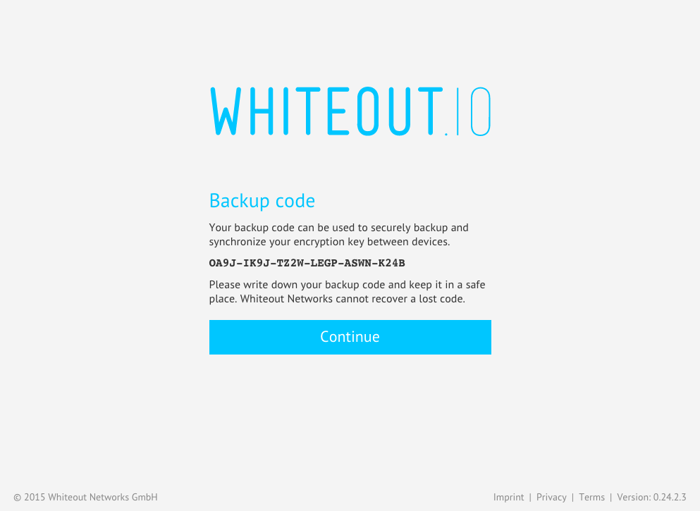
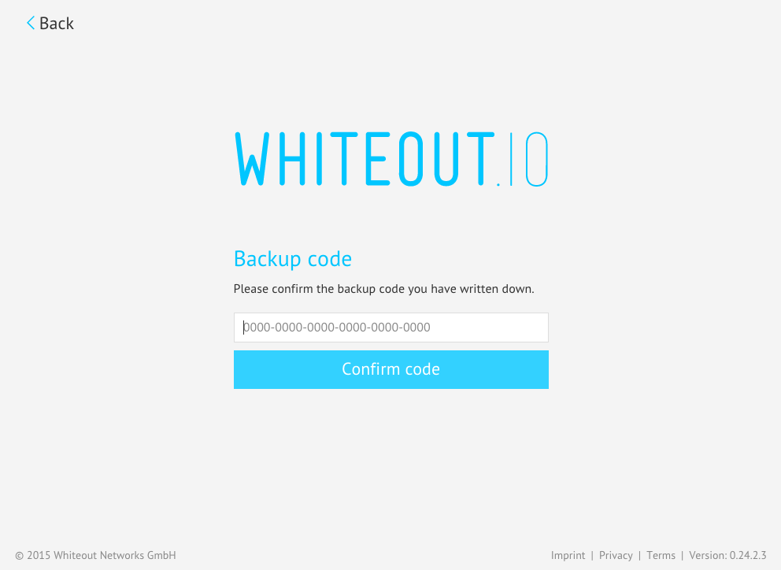
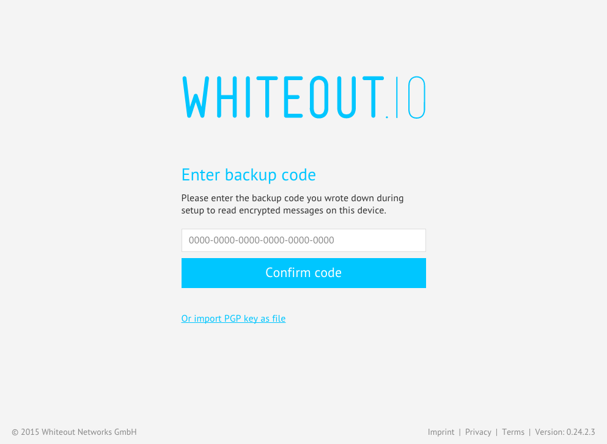

This post is a continuation of a previous post on encrypted sync of a user’s private PGP key. In the previous post we discussed that in today’s multi screen world it is mandatory to be able to read and write encrypted messages on several devices at once. In this context we proposed a specification for encrypted key synchronization. This post will once again highlight this topic by introducing a new simplified version of the specification.
Specification Update - an RFC
The new spec is published in our GitHub wiki and our intent is to publish this as an RFC for standardization, as other OpenPGP user agents such as Enigmail have expressed interest:
Secure OpenPGP Key Pair Synchronization via IMAP (RFC)
In a nutshell, the new spec is much simpler than our initial proposal. The encrypted private key is no longer stored on our server, but rather just stored in the user’s IMAP server. This not only removes the need to add a proprietary authentication mechanism, since IMAP servers already provide password (as well as 2-factor) based authentication, it also reduces the complexity of the overall protocol. This reduces the attack surface since a simpler protocol is easier to reason about, audit, and implement correctly.
User Experience
The user experience has also been simplified. The user no longer needs to be logged into another mail client to receive the recovery token required for authentication. The user simply needs to have an active IMAP session open, which is the case anyway for Whiteout Mail.
Upload
Key sync is now mandatory and the first time a user sets up Whiteout Mail they are prompted to write down a backup code.

They are then prompted to confirm the backup code.

Now the user’s key pair is backed up in case they lose their device or in case they want to sync to a new device.
Download
To add a new device, the user simply logs into Whiteout Mail with their email address. The app will automatically detect a synced key and will prompt the user to enter the backup code.

And done! It’s that easy.
Try it now
To try out the new key sync, just head on over to our download page and install the app for your platform.
Acknowledgements
We want to thank Cure53 who have worked together with us to design and review the security of the new protocol.